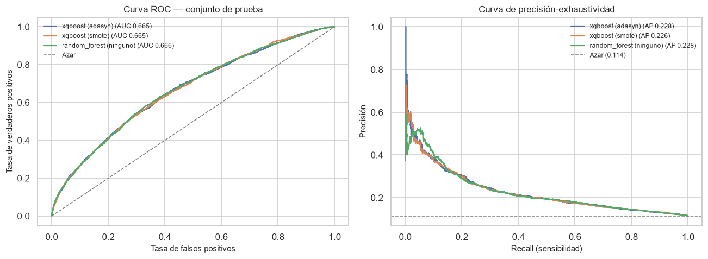
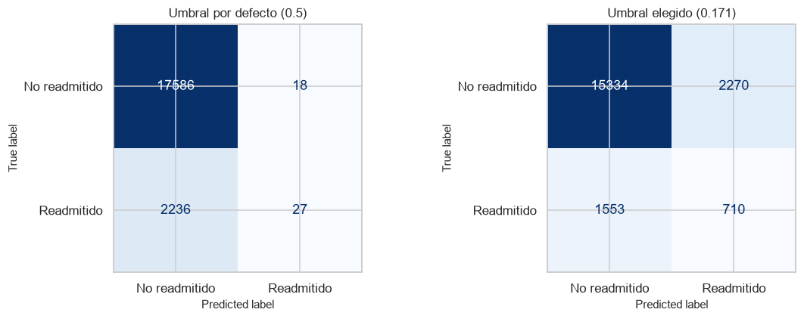
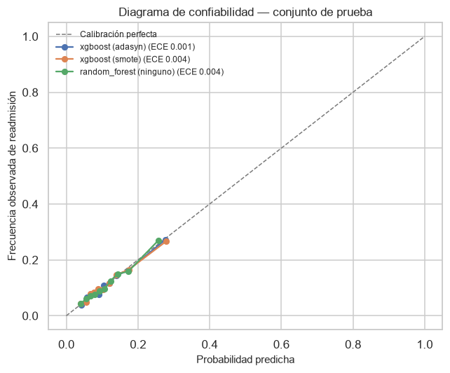
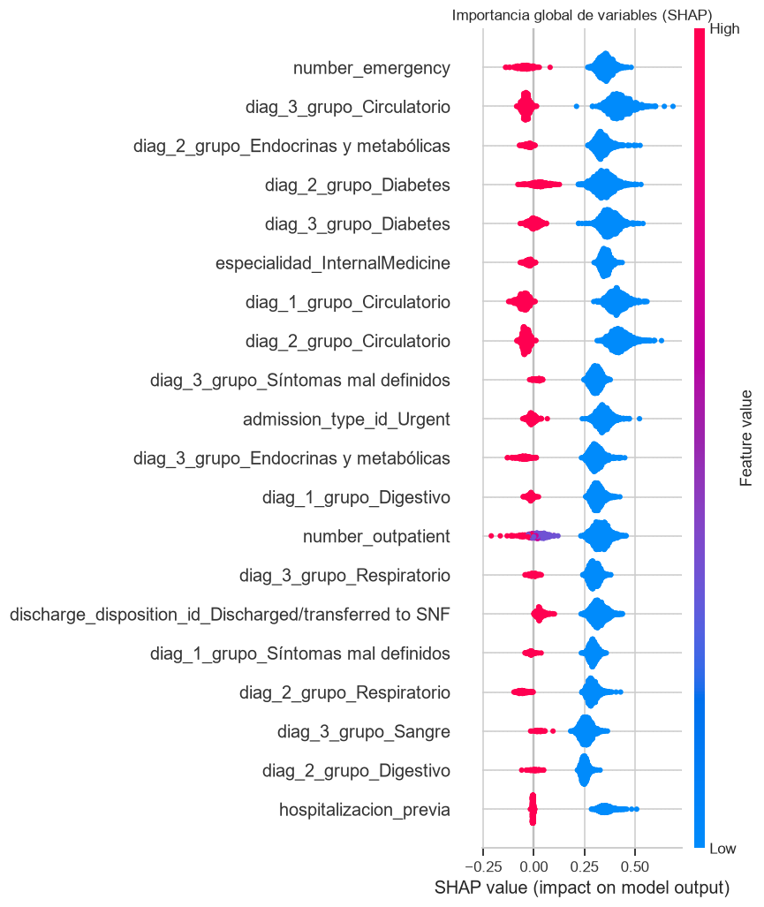
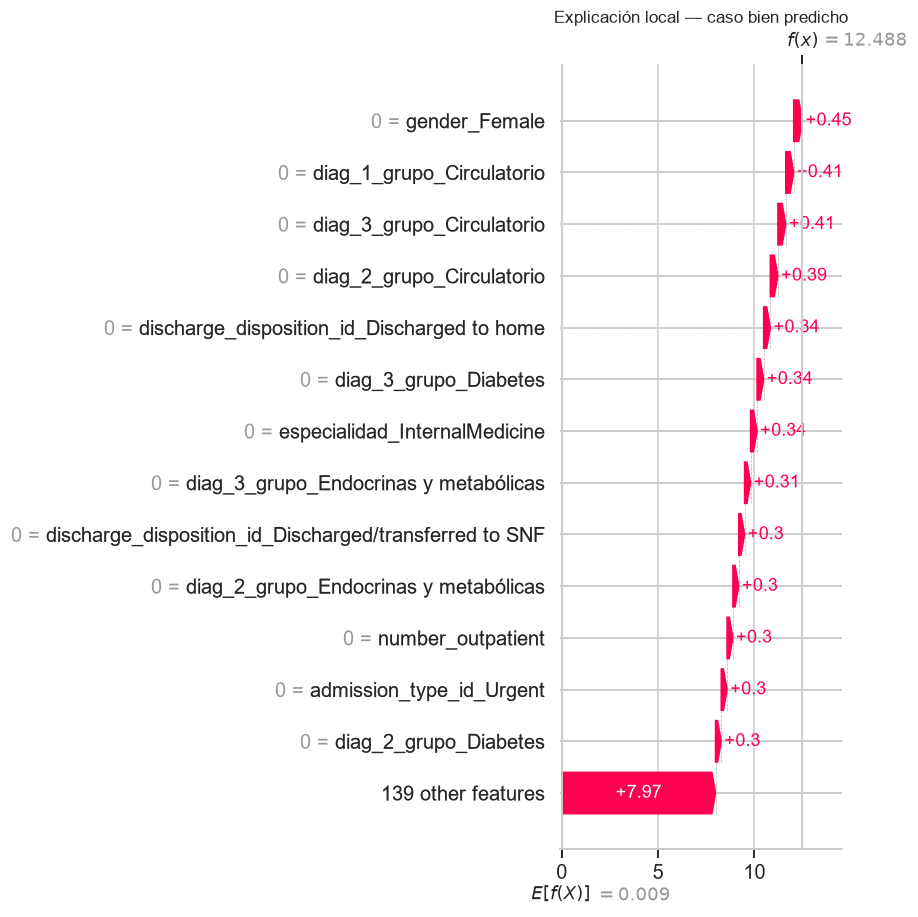
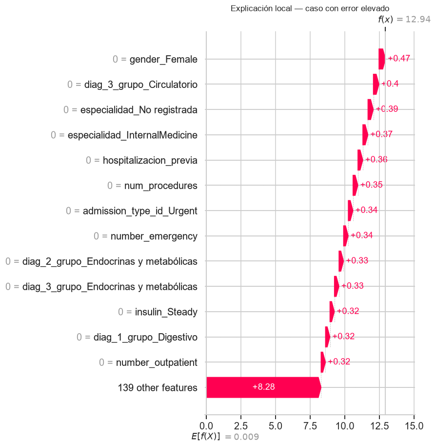
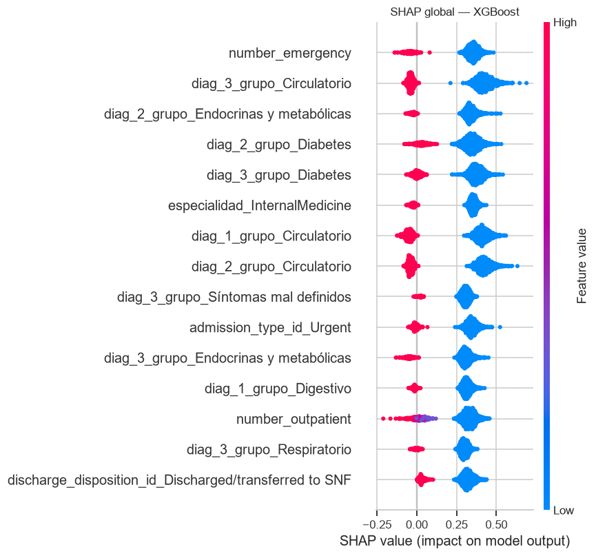

10. Evaluación del modelo final, calibración e interpretabilidad#
10.1. Objetivo#
Los capítulos 8 y 9 compararon 112 combinaciones usando el bucle externo de la validación anidada sobre el conjunto de entrenamiento. Este capítulo toma la mejor configuración, la ajusta con todo el entrenamiento y la evalúa por primera y única vez sobre el conjunto de prueba, reservado desde el capítulo 2.
Esa restricción es la que da validez a la estimación final. Cada vez que se mira el conjunto de prueba para tomar una decisión, deja de ser independiente; por eso no se usó en la selección de modelos ni de hiperparámetros ni de umbral.
from config import *
import experimento as ex
train = leer_tabla("diabetes_train")
prueba = leer_tabla("diabetes_test")
roles = roles_variables()
OBJETIVO, IDENTIFICADOR = roles["objetivo"], roles["identificador"]
PREDICTORES = (roles["numericas"] + roles["ordinales"]
+ roles["binarias"] + roles["categoricas"])
X_train, y_train = train[PREDICTORES], train[OBJETIVO]
X_prueba, y_prueba = prueba[PREDICTORES], prueba[OBJETIVO]
grupos = train[IDENTIFICADOR]
RAZON_DESBALANCE = float((1 - y_train.mean()) / y_train.mean())
maestra = pd.read_csv(RESULTADOS / "tabla_maestra_clasificacion.csv")
completadas = maestra.query("estado == 'completada'")
# Se evalúan los tres mejores por AUC-PR del bucle externo, lo que permite
# además las comparaciones dirigidas de DeLong en el capítulo 10.
FINALISTAS = (completadas.sort_values("auc_pr_media", ascending=False)
.head(3).reset_index(drop=True))
FINALISTAS[["modelo", "balanceo", "optimizador", "auc_pr_media",
"auc_pr_sd", "hiperparametros_por_fold"]]
| modelo | balanceo | optimizador | auc_pr_media | auc_pr_sd | hiperparametros_por_fold | |
|---|---|---|---|---|---|---|
| 0 | xgboost | adasyn | random | 0.226658 | 0.015267 | [{"modelo__learning_rate": 0.04200921260747154... |
| 1 | xgboost | smote | random | 0.226527 | 0.013230 | [{"modelo__learning_rate": 0.04200921260747154... |
| 2 | random_forest | ninguno | deap | 0.225755 | 0.017042 | [{"modelo__n_estimators": 447, "modelo__max_de... |
10.1.1. Hiperparámetros del modelo final#
La validación anidada elige hiperparámetros dentro de cada fold, de modo que puede haber cinco configuraciones distintas. Para el modelo final se toma la configuración modal entre folds: es la elección más estable y evita reejecutar una búsqueda sobre todo el entrenamiento, que no tendría conjunto independiente con el que validarse.
from collections import Counter
def configuracion_modal(fila):
"""Configuración de hiperparámetros más frecuente entre folds externos.
Returns
-------
dict
Hiperparámetros en formato de pipeline, y la frecuencia con que
fueron elegidos.
"""
por_fold = json.loads(fila["hiperparametros_por_fold"])
serializados = [json.dumps(p, sort_keys=True) for p in por_fold]
mas_comun, frecuencia = Counter(serializados).most_common(1)[0]
return json.loads(mas_comun), frecuencia, len(por_fold)
modelos_finales = {}
for _, fila in FINALISTAS.iterrows():
parametros, frecuencia, total = configuracion_modal(fila)
etiqueta = f"{fila['modelo']} ({fila['balanceo']})"
pipeline = ex.construir_pipeline(fila["modelo"], fila["balanceo"], roles,
RANDOM_STATE, RAZON_DESBALANCE)
pipeline.set_params(**parametros)
pipeline.fit(X_train, y_train)
modelos_finales[etiqueta] = pipeline
print(f"{etiqueta}: {parametros}")
print(f" elegida en {frecuencia} de {total} folds externos")
xgboost (adasyn): {'modelo__colsample_bytree': 0.9758770082318072, 'modelo__learning_rate': 0.04200921260747154, 'modelo__max_depth': 10, 'modelo__min_child_weight': 1.0160800688303486, 'modelo__subsample': 0.6544618838725631}
elegida en 1 de 5 folds externos
xgboost (smote): {'modelo__colsample_bytree': 0.9758770082318072, 'modelo__learning_rate': 0.04200921260747154, 'modelo__max_depth': 10, 'modelo__min_child_weight': 1.0160800688303486, 'modelo__subsample': 0.6544618838725631}
elegida en 1 de 5 folds externos
random_forest (ninguno): {'modelo__max_depth': 18, 'modelo__max_features': 0.19666666666666666, 'modelo__min_samples_leaf': 9, 'modelo__n_estimators': 447}
elegida en 1 de 5 folds externos
10.2. Métricas en el conjunto de prueba#
10.2.1. Justificación de la métrica principal#
La guía exige declarar explícitamente qué métrica gobierna la validación y por qué. En este problema:
La métrica de selección es el AUC-PR. Mide la capacidad de ordenar pacientes por riesgo concentrándose en la clase minoritaria, que es la de interés, y no depende del umbral. Con una prevalencia del 11.4 %, el AUC-ROC premia en exceso el acierto sobre la clase mayoritaria: un modelo puede tener un AUC-ROC respetable y ser inútil para priorizar seguimiento.
La métrica operativa es el recall, sujeto a una restricción de precisión. El costo clínico es asimétrico: un falso negativo es un paciente que reingresa sin haber recibido seguimiento reforzado, con el costo sanitario y humano que eso implica; un falso positivo es una llamada de seguimiento o una cita adicional innecesaria, comparativamente barato. Esa asimetría favorece maximizar el recall.
Pero el recall no puede maximizarse sin límite: un modelo que marque a todos los pacientes tiene recall perfecto y es inservible, porque el hospital no puede dar seguimiento intensivo a todos. La formulación realista es maximizar el recall sujeto a la capacidad de seguimiento disponible, lo que se traduce en fijar el umbral de forma que el número de pacientes marcados sea el que el servicio puede atender. La sección 10.3 lo hace explícito.
from sklearn.metrics import (
ConfusionMatrixDisplay, classification_report, precision_recall_curve,
roc_curve,
)
probabilidades = {etiqueta: modelo.predict_proba(X_prueba)[:, 1]
for etiqueta, modelo in modelos_finales.items()}
# Se guardan para las comparaciones dirigidas del capítulo 10.
pd.DataFrame({**{"y_real": y_prueba.to_numpy()},
**{f"p_{e}": p for e, p in probabilidades.items()}}).to_csv(
RESULTADOS / "predicciones_prueba.csv", index=False)
metricas_prueba = pd.DataFrame({
etiqueta: ex.calcular_metricas(y_prueba, p)
for etiqueta, p in probabilidades.items()
}).T
guardar_resultado(metricas_prueba, "metricas_prueba")
metricas_prueba.round(4)
| auc_roc | auc_pr | exactitud | precision | recall | f1 | exactitud_balanceada | brier | |
|---|---|---|---|---|---|---|---|---|
| xgboost (adasyn) | 0.6650 | 0.2285 | 0.8865 | 0.6000 | 0.0119 | 0.0234 | 0.5055 | 0.0962 |
| xgboost (smote) | 0.6648 | 0.2263 | 0.8864 | 0.5854 | 0.0106 | 0.0208 | 0.5048 | 0.0962 |
| random_forest (ninguno) | 0.6658 | 0.2279 | 0.8861 | 0.6667 | 0.0009 | 0.0018 | 0.5004 | 0.0962 |
fig, axes = plt.subplots(1, 2, figsize=(12, 4.5))
for etiqueta, p in probabilidades.items():
fpr, tpr, _ = roc_curve(y_prueba, p)
axes[0].plot(fpr, tpr, label=f"{etiqueta} (AUC "
f"{metricas_prueba.loc[etiqueta, 'auc_roc']:.3f})")
precision, recall, _ = precision_recall_curve(y_prueba, p)
axes[1].plot(recall, precision,
label=f"{etiqueta} (AP "
f"{metricas_prueba.loc[etiqueta, 'auc_pr']:.3f})")
axes[0].plot([0, 1], [0, 1], ls="--", color=GRIS, lw=1, label="Azar")
axes[0].set_xlabel("Tasa de falsos positivos")
axes[0].set_ylabel("Tasa de verdaderos positivos")
axes[0].set_title("Curva ROC — conjunto de prueba")
axes[0].legend(fontsize=8)
axes[1].axhline(y_prueba.mean(), ls="--", color=GRIS, lw=1,
label=f"Azar ({y_prueba.mean():.3f})")
axes[1].set_xlabel("Recall (sensibilidad)")
axes[1].set_ylabel("Precisión")
axes[1].set_title("Curva de precisión-exhaustividad")
axes[1].legend(fontsize=8)
plt.tight_layout()
plt.show()

La comparación entre las dos curvas ilustra por qué la elección de métrica importa. La ROC parte de la diagonal como referencia de azar; la de precisión-exhaustividad parte de una línea horizontal en la prevalencia. Un modelo con AUC-ROC de 0.67 puede parecer mediocre pero tener un AUC-PR que duplica la prevalencia, lo que en términos operativos significa que priorizar con el modelo acierta el doble que priorizar al azar.
10.3. Selección del umbral de decisión#
El umbral 0.5 es una convención sin fundamento en problemas desbalanceados. Se examinan tres criterios y se elige uno de forma explícita.
MEJOR = FINALISTAS.iloc[0]
ETIQUETA_MEJOR = f"{MEJOR['modelo']} ({MEJOR['balanceo']})"
p_mejor = probabilidades[ETIQUETA_MEJOR]
# Capacidad de seguimiento: proporción de altas que el servicio puede
# atender con seguimiento reforzado. Es un parámetro organizativo, no
# estadístico, así que se declara y se explora su efecto.
CAPACIDADES = [0.05, 0.10, 0.15, 0.20, 0.30]
from sklearn.metrics import f1_score, precision_score, recall_score
filas = []
for capacidad in CAPACIDADES:
umbral = float(np.quantile(p_mejor, 1 - capacidad))
predicho = (p_mejor >= umbral).astype(int)
filas.append({
"capacidad de seguimiento": capacidad,
"umbral": umbral,
"pacientes marcados": int(predicho.sum()),
"recall": recall_score(y_prueba, predicho),
"precision": precision_score(y_prueba, predicho, zero_division=0),
"f1": f1_score(y_prueba, predicho, zero_division=0),
"readmisiones detectadas": int((predicho & y_prueba).sum()),
"readmisiones perdidas": int((~predicho.astype(bool)
& y_prueba.astype(bool)).sum()),
})
umbrales = pd.DataFrame(filas).round(4)
guardar_resultado(umbrales, "seleccion_umbral")
umbrales
| capacidad de seguimiento | umbral | pacientes marcados | recall | precision | f1 | readmisiones detectadas | readmisiones perdidas | |
|---|---|---|---|---|---|---|---|---|
| 0 | 0.05 | 0.2479 | 994 | 0.1427 | 0.3249 | 0.1983 | 323 | 1940 |
| 1 | 0.10 | 0.1982 | 1987 | 0.2391 | 0.2723 | 0.2546 | 541 | 1722 |
| 2 | 0.15 | 0.1705 | 2980 | 0.3137 | 0.2383 | 0.2708 | 710 | 1553 |
| 3 | 0.20 | 0.1528 | 3974 | 0.3818 | 0.2174 | 0.2771 | 864 | 1399 |
| 4 | 0.30 | 0.1287 | 5960 | 0.5077 | 0.1928 | 0.2795 | 1149 | 1114 |
# Comparación de criterios de umbral
umbral_f1 = None
precision_curva, recall_curva, cortes = precision_recall_curve(y_prueba,
p_mejor)
f1_curva = np.divide(2 * precision_curva * recall_curva,
precision_curva + recall_curva,
out=np.zeros_like(precision_curva),
where=(precision_curva + recall_curva) > 0)
umbral_f1 = float(cortes[int(np.argmax(f1_curva[:-1]))])
fpr, tpr, cortes_roc = roc_curve(y_prueba, p_mejor)
umbral_youden = float(cortes_roc[int(np.argmax(tpr - fpr))])
criterios = pd.DataFrame([
{"criterio": "Umbral por defecto", "umbral": 0.5},
{"criterio": "Máximo F1", "umbral": umbral_f1},
{"criterio": "Índice de Youden (máx. sensibilidad + especificidad)",
"umbral": umbral_youden},
{"criterio": "Capacidad de seguimiento del 15 %",
"umbral": float(np.quantile(p_mejor, 0.85))},
])
for indice, fila in criterios.iterrows():
predicho = (p_mejor >= fila["umbral"]).astype(int)
criterios.loc[indice, "marcados"] = int(predicho.sum())
criterios.loc[indice, "recall"] = recall_score(y_prueba, predicho)
criterios.loc[indice, "precision"] = precision_score(y_prueba, predicho,
zero_division=0)
criterios.round(4)
| criterio | umbral | marcados | recall | precision | |
|---|---|---|---|---|---|
| 0 | Umbral por defecto | 0.5000 | 45.0 | 0.0119 | 0.6000 |
| 1 | Máximo F1 | 0.1327 | 5527.0 | 0.4852 | 0.1987 |
| 2 | Índice de Youden (máx. sensibilidad + especifi... | 0.1082 | 8384.0 | 0.6381 | 0.1722 |
| 3 | Capacidad de seguimiento del 15 % | 0.1705 | 2980.0 | 0.3137 | 0.2383 |
UMBRAL_ELEGIDO = float(np.quantile(p_mejor, 0.85))
predicciones = (p_mejor >= UMBRAL_ELEGIDO).astype(int)
fig, axes = plt.subplots(1, 2, figsize=(11, 4))
for eje, umbral, titulo in [(axes[0], 0.5, "Umbral por defecto (0.5)"),
(axes[1], UMBRAL_ELEGIDO,
f"Umbral elegido ({UMBRAL_ELEGIDO:.3f})")]:
ConfusionMatrixDisplay.from_predictions(
y_prueba, (p_mejor >= umbral).astype(int), ax=eje, colorbar=False,
display_labels=["No readmitido", "Readmitido"], cmap="Blues")
eje.set_title(titulo)
plt.tight_layout()
plt.show()
print(classification_report(y_prueba, predicciones,
target_names=["No readmitido", "Readmitido"],
digits=4))

precision recall f1-score support
No readmitido 0.9080 0.8711 0.8892 17604
Readmitido 0.2383 0.3137 0.2708 2263
accuracy 0.8076 19867
macro avg 0.5731 0.5924 0.5800 19867
weighted avg 0.8317 0.8076 0.8187 19867
El contraste entre las dos matrices de confusión es el argumento más claro contra el umbral por defecto: con 0.5, el modelo marca muy pocos pacientes y pierde la mayoría de las readmisiones, aunque su exactitud global parezca alta. Con el umbral fijado por capacidad, la exactitud baja y el recall sube, que es el intercambio que la asimetría de costos clínicos justifica.
10.4. Calibración de probabilidades#
Un modelo puede ordenar bien a los pacientes y aun así producir probabilidades cuya magnitud no corresponde a la frecuencia real del evento. Para una decisión clínica la magnitud importa: si el modelo dice 30 %, aproximadamente 3 de cada 10 pacientes con esa predicción deberían reingresar.
def error_calibracion_esperado(y_real, probabilidades, n_bins=10):
"""Error de calibración esperado (ECE) con bins de anchura uniforme.
Promedia, ponderando por el número de observaciones de cada bin, la
discrepancia absoluta entre la confianza media predicha y la frecuencia
observada del evento.
Returns
-------
float
"""
bordes = np.linspace(0, 1, n_bins + 1)
indices = np.digitize(probabilidades, bordes[1:-1])
total, error = len(probabilidades), 0.0
for bin_id in range(n_bins):
mascara = indices == bin_id
if not mascara.any():
continue
confianza = probabilidades[mascara].mean()
observada = y_real.to_numpy()[mascara].mean()
error += (mascara.sum() / total) * abs(confianza - observada)
return float(error)
from sklearn.calibration import CalibratedClassifierCV, calibration_curve
from sklearn.metrics import brier_score_loss
calibracion = pd.DataFrame({
etiqueta: {
"Brier": brier_score_loss(y_prueba, p),
"ECE": error_calibracion_esperado(y_prueba, p),
"probabilidad media predicha": p.mean(),
"prevalencia observada": y_prueba.mean(),
}
for etiqueta, p in probabilidades.items()
}).T
calibracion.round(4)
| Brier | ECE | probabilidad media predicha | prevalencia observada | |
|---|---|---|---|---|
| xgboost (adasyn) | 0.0962 | 0.0013 | 0.1149 | 0.1139 |
| xgboost (smote) | 0.0962 | 0.0044 | 0.1144 | 0.1139 |
| random_forest (ninguno) | 0.0962 | 0.0044 | 0.1140 | 0.1139 |
fig, ax = plt.subplots(figsize=(6, 5))
ax.plot([0, 1], [0, 1], ls="--", color=GRIS, lw=1,
label="Calibración perfecta")
for etiqueta, p in probabilidades.items():
observada, predicha = calibration_curve(y_prueba, p, n_bins=10,
strategy="quantile")
ax.plot(predicha, observada, marker="o", markersize=5,
label=f"{etiqueta} (ECE "
f"{calibracion.loc[etiqueta, 'ECE']:.3f})")
ax.set_xlabel("Probabilidad predicha")
ax.set_ylabel("Frecuencia observada de readmisión")
ax.set_title("Diagrama de confiabilidad — conjunto de prueba")
ax.legend(fontsize=8)
plt.tight_layout()
plt.show()

Una curva por debajo de la diagonal indica sobreconfianza: el modelo predice probabilidades mayores que la frecuencia real. Es el patrón esperable en los modelos entrenados con class_weight o con sobremuestreo, porque el reponderado altera deliberadamente la prevalencia aparente durante el entrenamiento y las probabilidades resultantes dejan de estar en la escala original. Ese es un punto importante para el informe: el balanceo mejora el recall a costa de descalibrar las probabilidades, y si el uso previsto requiere probabilidades interpretables, hace falta recalibrar.
10.4.1. Recalibración#
# La recalibración se ajusta con validación cruzada interna sobre el
# entrenamiento; el conjunto de prueba nunca participa en el ajuste.
pipeline_mejor = ex.construir_pipeline(
MEJOR["modelo"], MEJOR["balanceo"], roles, RANDOM_STATE,
RAZON_DESBALANCE)
parametros_mejor, _, _ = configuracion_modal(MEJOR)
pipeline_mejor.set_params(**parametros_mejor)
from sklearn.model_selection import StratifiedGroupKFold
cv_calibracion = StratifiedGroupKFold(n_splits=3, shuffle=True,
random_state=RANDOM_STATE)
particiones = list(cv_calibracion.split(X_train, y_train, groups=grupos))
filas = [{"variante": "Sin recalibrar",
"Brier": brier_score_loss(y_prueba, p_mejor),
"ECE": error_calibracion_esperado(y_prueba, p_mejor),
"AUC-PR": metricas_prueba.loc[ETIQUETA_MEJOR, "auc_pr"]}]
for metodo, nombre in [("sigmoid", "Escalado de Platt"),
("isotonic", "Regresión isotónica")]:
calibrado = CalibratedClassifierCV(pipeline_mejor, method=metodo,
cv=particiones)
calibrado.fit(X_train, y_train)
p_calibrado = calibrado.predict_proba(X_prueba)[:, 1]
filas.append({
"variante": nombre,
"Brier": brier_score_loss(y_prueba, p_calibrado),
"ECE": error_calibracion_esperado(y_prueba, p_calibrado),
"AUC-PR": ex.calcular_metricas(y_prueba, p_calibrado)["auc_pr"],
})
efecto_recalibracion = pd.DataFrame(filas).set_index("variante").round(4)
guardar_resultado(efecto_recalibracion, "efecto_recalibracion")
efecto_recalibracion
| Brier | ECE | AUC-PR | |
|---|---|---|---|
| variante | |||
| Sin recalibrar | 0.0962 | 0.0013 | 0.2285 |
| Escalado de Platt | 0.0962 | 0.0137 | 0.2302 |
| Regresión isotónica | 0.0961 | 0.0015 | 0.2277 |
Lo que hay que verificar en esta tabla es que la recalibración reduzca el ECE y el Brier sin degradar el AUC-PR. Tiene sentido teórico: tanto el escalado de Platt como la regresión isotónica son transformaciones monótonas de las probabilidades, y una transformación monótona no altera el ordenamiento de los pacientes ni, por tanto, las métricas basadas en ranking. Si el AUC-PR cambia de forma apreciable, conviene sospechar de un error en el procedimiento.
Entre los dos métodos: Platt ajusta una sigmoide de dos parámetros, más estable con pocos datos pero incapaz de corregir distorsiones no sigmoideas; la isotónica es no paramétrica y más flexible, con mayor riesgo de sobreajuste cuando la clase positiva es escasa. Con 9,000 casos positivos en entrenamiento, la isotónica es viable.
10.5. Interpretabilidad global y local con SHAP#
Los valores de Shapley provienen de la teoría de juegos cooperativos: reparten la diferencia entre la predicción de una observación y la predicción media entre las variables, de forma que la atribución satisface eficiencia (las contribuciones suman esa diferencia), simetría (variables con el mismo efecto reciben la misma atribución) y aditividad.
import shap
# Se reutiliza el pipeline ya ajustado más arriba, que es el que produjo las
# probabilidades analizadas en todo el capítulo. El `pipeline_mejor` de la
# sección anterior no sirve aquí: solo actuó de plantilla para
# `CalibratedClassifierCV`, que lo clona internamente, de modo que el objeto
# original queda sin ajustar.
modelo_mejor = modelos_finales[ETIQUETA_MEJOR]
preprocesador_final = modelo_mejor.named_steps["preprocesamiento"]
estimador_final = modelo_mejor.named_steps["modelo"]
nombres = ex.nombres_variables(preprocesador_final)
def estimador_interpretable(estimador):
"""Devuelve el objeto que SHAP sabe interpretar.
El XGBoost del proyecto va envuelto en ``XGBClasificadorParada`` para
implementar la parada temprana, y ``TreeExplainer`` solo reconoce las
familias de modelos que tiene registradas: hay que entregarle el
``XGBClassifier`` interno, que el envoltorio expone en ``modelo_`` una
vez ajustado. Para el resto de modelos la función es la identidad.
Returns
-------
sklearn.base.BaseEstimator
"""
return getattr(estimador, "modelo_", estimador)
MUESTRA_SHAP = 2_000
indices = np.random.default_rng(RANDOM_STATE).choice(
len(X_prueba), size=min(MUESTRA_SHAP, len(X_prueba)), replace=False)
matriz_prueba = preprocesador_final.transform(X_prueba.iloc[indices])
if hasattr(matriz_prueba, "toarray"):
matriz_prueba = matriz_prueba.toarray()
matriz_prueba = pd.DataFrame(matriz_prueba, columns=nombres)
# El explicador se elige según la familia del modelo: exacto para árboles,
# lineal para modelos lineales, y por muestreo en los demás casos.
if MEJOR["modelo"] in {"arbol", "random_forest", "xgboost"}:
explicador = shap.TreeExplainer(estimador_interpretable(estimador_final))
elif MEJOR["modelo"] == "logistica":
explicador = shap.LinearExplainer(estimador_final, matriz_prueba)
else:
fondo = shap.sample(matriz_prueba, 100, random_state=RANDOM_STATE)
explicador = shap.KernelExplainer(
lambda datos: estimador_final.predict_proba(datos)[:, 1], fondo)
valores_shap = explicador(matriz_prueba) if hasattr(explicador, "__call__") \
else explicador.shap_values(matriz_prueba)
print(f"Modelo explicado : {ETIQUETA_MEJOR}")
print(f"Objeto entregado : "
f"{type(estimador_interpretable(estimador_final)).__name__}")
print(f"Explicador : {type(explicador).__name__}")
print(f"Matriz explicada : {matriz_prueba.shape[0]:,} x {matriz_prueba.shape[1]}")
Modelo explicado : xgboost (adasyn)
Objeto entregado : XGBClassifier
Explicador : TreeExplainer
Matriz explicada : 2,000 x 152
# Interpretabilidad global: magnitud e importancia relativa de cada variable.
shap.summary_plot(valores_shap, matriz_prueba, max_display=20, show=False)
plt.title("Importancia global de variables (SHAP)")
plt.tight_layout()
plt.show()

# Interpretabilidad local: un caso bien clasificado y otro con error grande.
p_muestra = p_mejor[indices]
y_muestra = y_prueba.to_numpy()[indices]
# Positivo detectado con alta confianza y positivo perdido con baja
# probabilidad: el contraste entre ambos explica el tipo de paciente que el
# modelo no reconoce.
positivos = np.where(y_muestra == 1)[0]
caso_acierto = int(positivos[np.argmax(p_muestra[positivos])])
caso_error = int(positivos[np.argmin(p_muestra[positivos])])
print(f"Caso bien predicho: probabilidad {p_muestra[caso_acierto]:.3f}, "
f"real {y_muestra[caso_acierto]}")
print(f"Caso con error : probabilidad {p_muestra[caso_error]:.3f}, "
f"real {y_muestra[caso_error]}")
for nombre_caso, indice_caso in [("bien predicho", caso_acierto),
("con error elevado", caso_error)]:
shap.plots.waterfall(valores_shap[indice_caso], max_display=14,
show=False)
plt.title(f"Explicación local — caso {nombre_caso}")
plt.tight_layout()
plt.show()
Caso bien predicho: probabilidad 0.504, real 1
Caso con error : probabilidad 0.037, real 1


10.6. Comparación con LIME sobre XGBoost#
La guía pide explicar XGBoost también con LIME y discutir en qué difieren ambos métodos. Las diferencias son metodológicas y anticipan cuándo pueden divergir:
Aspecto |
SHAP |
LIME |
|---|---|---|
Fundamento |
Valores de Shapley de la teoría de juegos; atribución con garantías de eficiencia y consistencia |
Ajuste de un modelo lineal interpretable en un vecindario de la observación |
Cómputo en árboles |
Exacto y eficiente con |
Requiere muestrear perturbaciones y reajustar un modelo local |
Vecindario |
No define vecindario: promedia sobre todas las coaliciones de variables |
Depende críticamente del ancho del kernel que define qué es “cercano” |
Estabilidad |
Determinista para un conjunto de fondo dado |
Estocástico: dos ejecuciones pueden dar explicaciones distintas |
Interacciones |
Las reparte entre las variables implicadas |
El modelo local lineal no las representa |
Divergen sobre todo cuando la frontera de decisión es muy no lineal en el entorno del punto explicado: LIME aproxima con un plano lo que localmente no lo es, y su explicación depende del ancho del vecindario elegido. También divergen cuando hay variables correlacionadas, caso en el que el capítulo 5 documentó el bloque insulin-change-diabetesMed: SHAP reparte la contribución entre ellas y LIME puede atribuirla casi por completo a una sola.
# XGBoost se ajusta específicamente para esta comparación, aunque no sea el
# mejor modelo global, porque la guía lo exige para el análisis de
# interpretabilidad.
try:
mejor_xgboost = (completadas.query("modelo == 'xgboost'")
.sort_values("auc_pr_media", ascending=False)
.iloc[0])
parametros_xgb, _, _ = configuracion_modal(mejor_xgboost)
pipeline_xgb = ex.construir_pipeline(
"xgboost", mejor_xgboost["balanceo"], roles, RANDOM_STATE,
RAZON_DESBALANCE)
pipeline_xgb.set_params(**parametros_xgb)
pipeline_xgb.fit(X_train, y_train)
pre_xgb = pipeline_xgb.named_steps["preprocesamiento"]
est_xgb = pipeline_xgb.named_steps["modelo"]
nombres_xgb = ex.nombres_variables(pre_xgb)
matriz_xgb = pre_xgb.transform(X_prueba.iloc[indices])
if hasattr(matriz_xgb, "toarray"):
matriz_xgb = matriz_xgb.toarray()
shap_xgb = shap.TreeExplainer(
estimador_interpretable(est_xgb))(matriz_xgb)
shap.summary_plot(shap_xgb, pd.DataFrame(matriz_xgb,
columns=nombres_xgb),
max_display=15, show=False)
plt.title("SHAP global — XGBoost")
plt.tight_layout()
plt.show()
except ImportError as exc:
print(f"XGBoost no disponible: {exc}")

from lime.lime_tabular import LimeTabularExplainer
matriz_train_xgb = pre_xgb.transform(X_train)
if hasattr(matriz_train_xgb, "toarray"):
matriz_train_xgb = matriz_train_xgb.toarray()
explicador_lime = LimeTabularExplainer(
matriz_train_xgb,
feature_names=nombres_xgb,
class_names=["No readmitido", "Readmitido"],
discretize_continuous=True,
random_state=RANDOM_STATE,
)
CASO = caso_acierto
explicacion = explicador_lime.explain_instance(
matriz_xgb[CASO], est_xgb.predict_proba, num_features=12)
lime_tabla = pd.DataFrame(explicacion.as_list(),
columns=["condición", "peso LIME"])
tabla(lime_tabla.round(4))
| Loading ITables v2.9.1 from the internet... (need help?) |
| ⓘ | condición | peso LIME |
|---|---|---|
| 0 | diag_3_grupo_infrequent_sklearn <= 0.00 | 0.0 |
| 1 | nateglinide_infrequent_sklearn <= 0.00 | 0.0 |
| 2 | diag_3_grupo_No registrado <= 0.00 | 0.0 |
| 3 | time_in_hospital <= -0.50 | 0.0 |
| 4 | number_inpatient > 1.00 | -0.0 |
| 5 | diag_3_grupo_Sangre <= 0.00 | 0.0 |
| 6 | n_farmacos_activos <= 0.00 | 0.0 |
| 7 | num_procedures <= -0.50 | 0.0 |
| 8 | repaglinide_infrequent_sklearn <= 0.00 | 0.0 |
| 9 | chlorpropamide_infrequent_sklearn <= 0.00 | 0.0 |
| 10 | num_lab_procedures <= -0.50 | -0.0 |
| 11 | especialidad_Nephrology <= 0.00 | 0.0 |
# Contraste directo: variables más influyentes según cada método para el
# mismo paciente.
shap_caso = pd.Series(shap_xgb.values[CASO], index=nombres_xgb)
top_shap = shap_caso.abs().sort_values(ascending=False).head(10)
comparacion_metodos = pd.DataFrame({
"SHAP (valor)": shap_caso[top_shap.index].round(4),
"SHAP (rango)": range(1, len(top_shap) + 1),
})
print("Diez variables más influyentes según SHAP para este paciente:")
display(comparacion_metodos)
print("\nSegún LIME (condiciones discretizadas):")
display(lime_tabla.head(10))
Diez variables más influyentes según SHAP para este paciente:
| SHAP (valor) | SHAP (rango) | |
|---|---|---|
| gender_Female | 0.4524 | 1 |
| diag_1_grupo_Circulatorio | 0.4113 | 2 |
| diag_3_grupo_Circulatorio | 0.4092 | 3 |
| diag_2_grupo_Circulatorio | 0.3927 | 4 |
| discharge_disposition_id_Discharged to home | 0.3449 | 5 |
| diag_3_grupo_Diabetes | 0.3432 | 6 |
| especialidad_InternalMedicine | 0.3364 | 7 |
| diag_3_grupo_Endocrinas y metabólicas | 0.3099 | 8 |
| discharge_disposition_id_Discharged/transferred to SNF | 0.3040 | 9 |
| diag_2_grupo_Endocrinas y metabólicas | 0.3029 | 10 |
Según LIME (condiciones discretizadas):
| condición | peso LIME | |
|---|---|---|
| 0 | diag_3_grupo_infrequent_sklearn <= 0.00 | 4.192272e-07 |
| 1 | nateglinide_infrequent_sklearn <= 0.00 | 3.271303e-07 |
| 2 | diag_3_grupo_No registrado <= 0.00 | 2.823012e-07 |
| 3 | time_in_hospital <= -0.50 | 2.746445e-07 |
| 4 | number_inpatient > 1.00 | -2.460165e-07 |
| 5 | diag_3_grupo_Sangre <= 0.00 | 2.312608e-07 |
| 6 | n_farmacos_activos <= 0.00 | 2.225639e-07 |
| 7 | num_procedures <= -0.50 | 2.156748e-07 |
| 8 | repaglinide_infrequent_sklearn <= 0.00 | 2.147497e-07 |
| 9 | chlorpropamide_infrequent_sklearn <= 0.00 | 1.822132e-07 |
Al comparar ambas listas conviene fijarse en tres cosas: si coinciden las variables del bloque más importante, si el signo de la contribución es el mismo, y si LIME atribuye a una sola variable lo que SHAP reparte entre varias correlacionadas. Las discrepancias no indican que un método esté equivocado, sino que responden a preguntas distintas: SHAP atribuye la desviación respecto a la predicción media; LIME describe la pendiente local de la frontera de decisión.
10.7. Síntesis del capítulo#
Dimensión |
Qué registrar |
|---|---|
Desempeño final |
AUC-ROC, AUC-PR y métricas de clasificación de los tres finalistas en el conjunto de prueba, con la comparación frente a lo estimado por el bucle externo |
Coherencia con la validación |
Si la métrica en prueba cae dentro del intervalo media ± desviación estándar del bucle externo. Una caída fuera de ese rango indicaría sobreajuste en la selección |
Umbral |
Criterio elegido, umbral resultante y el intercambio entre recall y precisión que implica |
Calibración |
Brier y ECE antes y después de recalibrar, con el efecto del balanceo sobre la calibración discutido |
Interpretabilidad global |
Variables dominantes en el gráfico SHAP y su coherencia con los hallazgos del capítulo 4 |
Interpretabilidad local |
Qué distingue al caso bien predicho del caso perdido |
SHAP frente a LIME |
Coincidencias y divergencias para el mismo paciente, con la explicación metodológica de las diferencias |